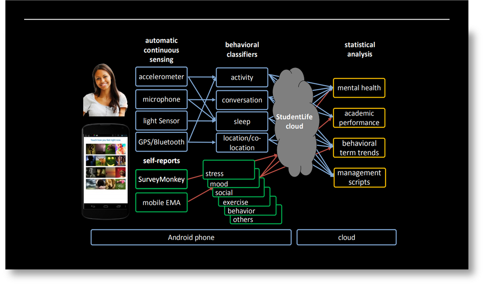
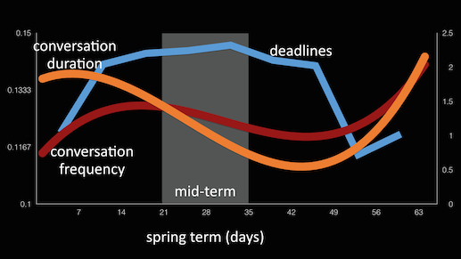
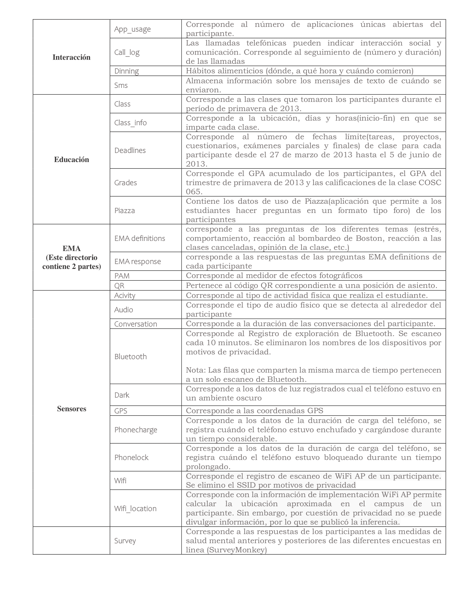

Gran parte del estrés y la tensión de la vida estudiantil permanece oculta. En realidad, los profesores, los estudiantes decanos y los médicos saben poco sobre sus estudiantes fuera del aula. Los estudiantes pueden conocer sus propias circunstancias y patrones, pero saben poco sobre sus compañeros de clase. Para arrojar luz sobre la vida estudiantil, se desarrollo la primera aplicación para teléfonos inteligentes y un sistema de detección para inferir automáticamente el comportamiento humano
• StudentLife es el primer estudio que utiliza datos de detección pasiva y automática de los teléfonos de una clase de 48 estudiantes de Dartmouth durante un período de 10 semanas(27/03/2013-05/06/2013).
• La aplicación Android StudentLife se ejecutó en los teléfonos de los estudiantes la cual midió automáticamente los comportamientos humanos 24/7 sin ninguna interacción del usuario.
• Esto con el fin de evaluar su salud mental (por ejemplo, depresión, soledad, estrés), rendimiento académico y tendencias de comportamiento en respuesta a la carga de trabajo de la universidad (exámenes parciales, finales, a medida que avanza el término).

El estudio capturó las tendencias de comportamiento a lo largo del término de Dartmouth.
Los estudiantes regresaron de las vacaciones de primavera sintiéndose bien consigo mismos, relajados (con bajos niveles de estrés, durmiendo bien. Todo eso cambió una vez que el período de Dartmouth se aceleró hacia la mitad de período y la final
Los estudiantes comienzan el trimestre teniendo largas conversaciones sociales. Durante la mitad del período, los estudiantes tienen menos conversaciones y son más breves. A medida que el término llega a su fin, las cosas cambian y la gente tiene conservaciones más frecuentes y más prolongadas.

El trimestre comienza cuando los estudiantes son muy activos, a medida que el término se pone en marcha, la actividad cae bruscamente a su nivel más bajo durante la mitad del período y permanece así durante el resto del período. El sueño cae a un punto bajo durante la mitad del período, curiosamente, la asistencia a clases disminuye constantemente a lo largo del trimestre hasta un punto bajo en el que los estudiantes solo asisten al 25% de sus clases en promedio.
Los directorios del conjunto de datos están organizados por tipos de datos
